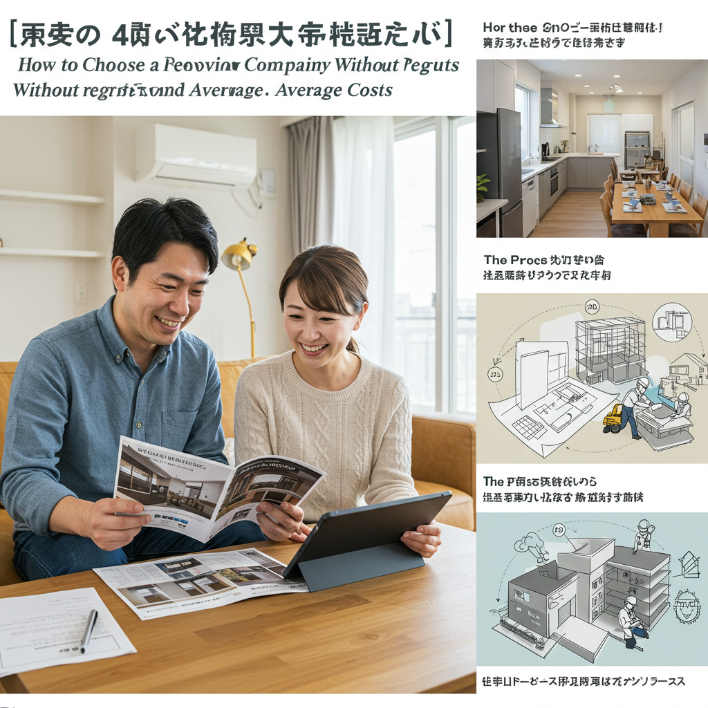

【40代向け】後悔しないリフォーム会社の選び方と費用相場

導入
40代。それは、これまでの人生を振り返り、これからの暮らしに想いを馳せる、特別な年代ではないでしょうか。仕事では責任ある立場になり、家庭ではお子様の成長や独立、あるいはご両親との同居など、家族の形にも変化が訪れる時期です。ふと我が家を見渡したとき、「もう少し暮らしやすかったら」「これからの人生を、もっと快適な空間で過ごしたい」そんな想いが芽生える方も少なくないでしょう。
住まいは、ただ雨風をしのぐ場所ではありません。家族の歴史が刻まれ、心安らぐ時間を過ごし、明日への活力を養う大切な基盤です。だからこそ、40代という節目に考えるリフォームは、単なる修繕や設備の交換に留まらない、これからの人生を豊かにするための大切な投資と言えます。
しかし、いざリフォームを考え始めると、多くの疑問や不安が頭をよぎります。「リフォームって、何から始めたらいいの？」「費用は一体いくらかかるのだろう？」「一番大切なのは、どこの会社に頼めばいいのか…」。特に、リフォーム会社選びは、その後の満足度を大きく左右する、最も重要なステップです。残念ながら、リフォーム業界には心無い業者も存在し、知識がないまま依頼して後悔してしまったという話も耳にします。
この記事は、そんなリフォームへの期待と不安を抱える40代のあなたのために生まれました。リフォーム会社選びの重要性から、会社の種類の違い、信頼できるパートナーを見極めるための具体的な方法、そして気になる費用相場まで、一つひとつ丁寧に、分かりやすく解説していきます。
大切な住まいと、これからの暮らしを任せるパートナー選びです。焦る必要はまったくありません。この記事を羅針盤として、あなたの理想の住まいづくりを、成功へと導くお手伝いができれば幸いです。落ち着いて、じっくりと、後悔しないための第一歩を一緒に踏み出しましょう。
リフォーム会社選びの重要性
「リフォームの成功は、会社選びで9割決まる」。これは決して大げさな言葉ではありません。どんなに素晴らしいリフォームの夢を描いても、それを形にしてくれるパートナー選びを間違えてしまえば、理想とはかけ離れた結果になったり、思わぬトラブルに巻き込まれたりする可能性があるからです。なぜ、リフォーム会社選びはこれほどまでに重要なのでしょうか。その理由を深く掘り下げて考えてみましょう。
信頼できる会社が必要な理由
リフォームは、単に「モノを買う」のとはわけが違います。それは、あなたの「暮らし」そのものを創り上げていく共同作業であり、リフォーム会社は、その夢を実現するための伴走者となる存在です。だからこそ、技術力や価格以上に、「信頼できるかどうか」が何よりも大切になります。
１．暮らしを委ねるパートナーだから
リフォームの打ち合わせでは、家族構成やライフスタイル、将来の夢、さらには現在の住まいに対する不満など、非常にプライベートな事柄まで話すことになります。例えば、「子どもが独立したので、夫婦二人の時間を楽しめるリビングにしたい」「将来、親との同居も考えて、バリアフリーにしておきたい」「趣味の時間を満喫できる書斎が欲しい」といった、あなたの人生観に深く関わる要望を伝える必要があります。
信頼できる会社や担当者は、そうした想いを真摯に受け止め、専門家としての知識と経験を掛け合わせることで、あなたの想像を超えるような素晴らしい提案をしてくれるでしょう。逆に、こちらの話に耳を傾けず、自社の都合ばかりを押し付けてくるような会社では、満足のいくリフォームは望めません。リフォームは、心の内を安心して話せる信頼関係の上に成り立つプロジェクトなのです。
２．専門的な知識と判断が不可欠だから
住まいは、私たちが普段目にしている壁や床の下に、柱や梁、断熱材、電気配線、水道管など、複雑な要素が絡み合ってできています。リフォームを行う際には、これらの構造的な問題を正しく理解し、安全性や耐久性を損なわないよう、専門的な判断を下す必要があります。
例えば、「この壁を抜いて、開放的なLDKにしたい」という希望があったとします。しかし、その壁が家の構造を支える重要な「耐力壁」だった場合、安易に撤去してしまうと、家の耐震性が著しく低下し、大きな地震が来た際に倒壊の危険性すら生じます。信頼できるリフォーム会社であれば、きちんと構造計算を行い、「この壁は抜けませんが、代わりにこちらの壁を抜いて、梁で補強すれば、安全性を確保しながらご希望に近い空間が作れますよ」といった、的確な代替案を提示してくれます。
見えない部分だからこそ、専門家の誠実な仕事が求められます。私たちの命と財産を守る住まいの安全性を、安心して委ねられる相手でなければならないのです。
３．長期的なお付き合いになるから
リフォームは、工事が終わればすべて完了、というわけではありません。実際に住み始めてから、「ドアの建付けが少し悪いかも」「新しい設備の使い方がよく分からない」といった小さな問題が出てくることもあります。また、5年後、10年後には、別の箇所のメンテナンスが必要になるかもしれません。
そんなとき、気軽に相談でき、迅速に対応してくれる会社であれば、どれほど心強いでしょうか。信頼できる会社は、工事後のアフターサービスや定期的な点検を通じて、あなたの住まいを長期的に見守ってくれる「住まいの主治医」のような存在になります。工事中だけでなく、その先何十年にもわたる安心を手に入れるためにも、誠実で長く付き合える会社を選ぶことが不可欠なのです。
悪徳業者に騙されないために知るべきこと
残念なことに、リフォーム業界には、お客様の不安や知識のなさに付け込んで不当な利益を得ようとする悪徳業者が存在します。大切な財産と穏やかな暮らしを守るためにも、彼らの典型的な手口を知り、冷静に対処する知識を身につけておきましょう。
１．不安を煽る「点検商法」
「無料で屋根の点検をしますよ」と突然訪問してきて、「このままでは雨漏りしますよ」「瓦がずれていて、次の台風で飛んだら大変なことになります」などと、過度に不安を煽ってくるケースです。専門用語を並べ立て、その場で契約を迫るのが特徴です。実際には問題ない箇所を、あたかも重大な欠陥があるかのように見せかけ、高額な工事契約を結ばせようとします。
対処法： 突然の訪問者による無料点検は、まず疑ってかかりましょう。本当に心配な場合は、その場ですぐに契約せず、「家族と相談します」「いつもお世話になっている工務店に聞いてみます」と伝え、別の信頼できる業者に改めて点検を依頼するのが賢明です。
２．甘い言葉で誘う「キャンペーン商法」
「今だけモニター価格で半額にします」「近所で工事をしているので、足場代をサービスします」といった、魅力的なキャンペーンを謳い文句に契約を急がせる手口です。「今日中に契約してくれれば」といった形で考える時間を与えず、冷静な判断をさせないように仕向けます。
対処法： 「限定」「今だけ」といった言葉には注意が必要です。本当に良い工事を適正価格で提供している会社は、不自然な値引きで契約を急かす必要はありません。魅力的なオファーであっても、必ず複数の会社から見積もりを取り、内容を比較検討する時間を持つことが重要です。
３．契約内容が曖昧な見積書・契約書
見積書に「○○工事一式」としか書かれておらず、具体的な材料のメーカー名や型番、数量、単価などの内訳が記載されていない場合は要注意です。工事が始まってから、「これは見積もりに含まれていません」と次々に追加料金を請求されたり、質の低い材料を使われたりするトラブルの原因になります。
対処法： 見積書は、細部に至るまで内訳が明記されているかを確認しましょう。少しでも不明な点があれば、担当者に納得がいくまで説明を求め、書面で回答をもらうようにしてください。曖昧な内容のまま、決して契約書にサインしてはいけません。
悪徳業者に騙されないための最大の防御策は、「その場で決めない」「複数の会社を比較する」という鉄則を守ることです。あなたの不安や焦りが、彼らにとっては最大のチャンスになります。どんなに魅力的な話でも、一度冷静になって考える時間を持つ勇気が、後悔しないリフォームの第一歩となるのです。
リフォーム会社の主な種類と特徴
「リフォーム会社」と一括りに言っても、その規模や得意分野は様々です。まるで洋服を選ぶとき、デパートに行くのか、セレクトショップを訪れるのか、あるいはオーダーメイドの専門店に頼むのかを選ぶように、リフォーム会社もそれぞれの特徴を理解し、自分の目的や価値観に合ったタイプを選ぶことが成功の鍵となります。ここでは、主なリフォーム会社の種類と、それぞれのメリット・デメリットを詳しく見ていきましょう。
大手リフォーム会社のメリット・デメリット
テレビCMや住宅展示場などでよく目にする、誰もが知っているハウスメーカー系や、全国展開しているリフォーム専門会社などがこれにあたります。圧倒的な知名度とブランド力が特徴です。
メリット
- ブランド力と安心感： 長年の実績と知名度からくる安心感は、大手ならではの最大のメリットです。万が一のトラブルがあった際にも、会社としてしっかり対応してくれるだろうという期待が持てます。
- 品質の安定性： 施工マニュアルが整備されており、一定水準以上の品質が期待できます。多くの実績があるため、様々なケースに対応できるノウハウが蓄積されています。
- 充実した保証とアフターサービス： 工事後の保証期間が長く設定されていたり、定期的な点検サービスがあったりと、アフターフォローが手厚い傾向にあります。リフォーム瑕疵保険への加入も徹底されていることが多いです。
- 総合力と提案力： 最新の設備や建材に関する情報が豊富で、グループ企業で開発した独自の商品を持っていることもあります。資金力があるため、ショールームなども充実しており、リフォーム後のイメージを具体的に掴みやすいのも魅力です。
- コンプライアンスの徹底： 契約書や各種手続きなどが法令に則ってしっかりと行われるため、契約上のトラブルは比較的少ないと言えるでしょう。
デメリット
- 費用が高くなる傾向： テレビCMなどの大規模な広告宣伝費、立派なショールームの維持費、多くの社員の人件費などが工事費用に上乗せされるため、地域密着型の会社などと比較すると、価格は高めになるのが一般的です。
- 下請け業者による施工： 実際の工事は、契約した大手リフォーム会社ではなく、提携している下請けの工務店が行うことがほとんどです。そのため、担当者と現場の職人との間で情報伝達がうまくいかず、要望が正確に伝わらないといったケースも稀に起こり得ます。
- プランの自由度が低い場合も： 品質を均一化するため、ある程度パッケージ化されたプランが用意されていることが多く、使用できる建材や設備が自社グループ製品に限定されることもあります。規格外の特殊な要望や、細かなこだわりを実現するのは難しい場合があります。
- 担当者の異動： 大企業ならではの組織体制のため、相談に乗ってくれた営業担当者が、工事の途中で転勤してしまう可能性もゼロではありません。長期的なお付き合いを望む場合には、少し寂しさを感じるかもしれません。
地域密着型リフォーム会社のメリット・デメリット
古くからその土地で営業している工務店や、リフォームを専門に扱う比較的小規模な会社がこのタイプです。社長自らが相談から現場管理まで行うことも多く、顔の見えるお付き合いが特徴です。
メリット
- 費用が比較的安い： 大手のような広告宣伝費や豪華なオフィスなどにかかる経費が少ないため、その分、工事費用を抑えられる傾向にあります。同じ内容の工事であれば、大手よりも安く済むことが多いでしょう。
- 小回りが利き、柔軟な対応： 経営者との距離が近く、意思決定が速いため、お客様の細かな要望にも柔軟に対応してくれやすいのが魅力です。ちょっとした追加の依頼や変更にも、親身になって相談に乗ってくれるでしょう。
- 地域の特性に精通： その土地の気候や風土、条例などを熟知しているため、地域の実情に合った最適なリフォームを提案してくれます。例えば、雪の多い地域なら落雪を考慮した屋根の提案、海が近い地域なら塩害に強い外壁材の提案などが期待できます。
- 迅速なアフターフォロー： 何かトラブルがあった際にも、営業エリアが限定されているため、すぐに駆けつけてくれるフットワークの軽さがあります。
- 評判を大切にする姿勢： 地域での評判が会社の生命線となるため、一件一件の工事を非常に丁寧に、誠実に行う傾向があります。悪い噂はすぐに広まってしまうため、手抜き工事などのリスクは低いと言えるでしょう。
デメリット
- 会社の情報が少ない： ホームページが簡素であったり、施工事例が少なかったりして、会社の情報を集めるのが難しい場合があります。実績や評判を客観的に判断する材料が乏しいことも。
- 得意・不得意がはっきりしている： 会社の規模が小さいため、対応できる工事の種類が限られることがあります。例えば、水回り工事は得意でも、耐震補強のような大規模な工事は経験が少ない、といったケースです。
- 提案力やデザイン性のばらつき： 担当者個人のスキルやセンスに依存する部分が大きく、最新のデザインや建材に関する情報収集が大手ほどではない場合もあります。洗練されたデザインを求める場合は、物足りなさを感じるかもしれません。
- 保証制度が不十分な場合も： 会社独自の保証制度が整っていなかったり、万が一会社が倒産してしまった場合の保証がなかったりする可能性も考えられます。契約前に、保証内容をしっかりと確認する必要があります。
デザイン系・専門特化型リフォーム会社のメリット・デメリット
建築家が主宰する設計事務所や、インテリアデザインに特化した会社、あるいは「外壁塗装専門」「キッチン専門」「耐震補強専門」のように、特定の分野に強みを持つ会社がこのタイプです。
メリット
- 高いデザイン性・専門性： デザイン系の会社であれば、雑誌に出てくるようなおしゃれで個性的な空間を実現できます。専門特化型の会社であれば、その分野における深い知識と高い技術力で、質の高い工事が期待できます。
- こだわりを形にできる： 施主のこだわりやライフスタイルを丁寧にヒアリングし、それを最大限に反映させたオーダーメイドのプランを作成してくれます。「ありきたりなリフォームでは満足できない」という方には最適です。
- 最適な解決策の提案： 専門分野に特化しているため、一般的なリフォーム会社では思いつかないような、専門的な視点からの解決策を提案してくれることがあります。例えば、断熱専門の会社なら、家の構造や状況を細かく分析し、最も効果的な断熱改修の方法を導き出してくれます。
デメリット
- 費用が高額になる傾向： デザイン系の会社では、工事費とは別に設計料やデザイン料がかかるのが一般的です。専門特化型の会社も、高品質な材料や特殊な工法を用いるため、費用は割高になることがあります。
- 設計と施工の分離： 設計事務所などに依頼した場合、設計は事務所が行い、実際の工事は別の工務店が行う「設計施工分離方式」が基本です。そのため、設計者の意図が施工業者に正確に伝わるよう、密な連携が不可欠となり、施主にもある程度の知識やコミュニケーション能力が求められます。
- 対応範囲が限定的： 専門特化型の場合、その専門分野以外の工事には対応できない、あるいは不得意なことがあります。複数の箇所をリフォームしたい場合は、別々の専門業者に依頼する必要が出てくるかもしれません。
- 相性が非常に重要： 特にデザイン系の会社では、建築家やデザイナーとの相性やセンスが合うかどうかが、リフォームの満足度を大きく左右します。作品集などを見て、自分の好みに合うかどうかを慎重に見極める必要があります。
あなたに合うリフォーム会社はどのタイプ？
さて、ここまで3つのタイプの会社を見てきましたが、あなたにぴったりのリフォーム会社はどのタイプでしょうか。それは、あなたがリフォームにおいて何を最も重視するかによって変わってきます。
- 「とにかく安心感が第一。失敗したくないし、アフターフォローも重視したい」という方
→ 大手リフォーム会社がおすすめです。価格は少し高めでも、ブランド力と充実した保証が、大きな安心感を与えてくれるでしょう。 - 「費用はできるだけ抑えたい。でも、親身になって相談に乗ってほしいし、地元のことをよく知っている会社がいい」という方
→ 地域密着型リフォーム会社が向いています。信頼できる会社を見つける手間はかかりますが、良いパートナーに出会えれば、コストパフォーマンスの高い、満足のいくリフォームが実現できるはずです。 - 「他にはない、自分だけのこだわりの空間を作りたい」「特定の悩みを専門的な技術で解決したい」という方
→ デザイン系・専門特化型リフォーム会社がその夢を叶えてくれるでしょう。費用や時間はかかるかもしれませんが、それを上回る満足感が得られる可能性があります。
もちろん、これはあくまで一般的な分類です。大手でも柔軟な対応をしてくれる会社もあれば、地域密着型でもデザイン性の高い提案をしてくれる会社もあります。大切なのは、それぞれの特徴を理解した上で、先入観を持たずに複数のタイプの会社から話を聞き、比較検討することです。あなたのリフォームの目的を明確にし、最高のパートナーを見つけ出しましょう。
リフォーム会社に依頼するメリット
リフォームを考えたとき、器用な方であれば「自分でやってみようか（DIY）」と考えたり、「知り合いの職人さんに直接頼んだ方が安上がりなのでは？」と思ったりすることもあるかもしれません。しかし、多くのリフォームにおいて、専門のリフォーム会社に依頼することには、それを上回る大きなメリットが存在します。ここでは、プロに任せることの価値について、改めて考えてみましょう。
メリット１．専門知識と経験に基づいた質の高い提案
リフォームの成功は、プランニングの段階で大きく左右されます。私たち素人が考える「こうしたい」という漠然としたイメージを、具体的で、かつ機能的・デザイン的に優れた「形」にしてくれるのがプロの力です。
暮らしを豊かにするアイデア
例えば、「キッチンが古くなったから新しくしたい」という要望に対して、リフォーム会社は単に新しいシステムキッチンを提案するだけではありません。普段の料理の仕方、家族の食事のスタイル、収納したい物の量や種類などを丁寧にヒアリングし、「作業効率を考えて、コンロとシンクを分けた二列型のキッチンはいかがですか？」「家族と会話しながら料理ができる対面式にして、カウンターを設ければ、お子様が宿題をするスペースにもなりますよ」といった、暮らしそのものを豊かにするアイデアを提案してくれます。これは、数多くの家庭のリフォームを手掛けてきた経験があるからこそできることです。
見えない部分への配慮
また、プロは目に見えない部分にも配慮します。例えば、冬場のヒートショックを防ぐための浴室の断熱対策、将来の介護を見据えた手すりの下地補強、省エネ効果を高める窓の交換や断熱材の追加など、長期的な視点で住まいの性能を向上させる提案をしてくれます。建築基準法や各種補助金制度といった専門的な知識も豊富なので、法規を遵守しつつ、利用できる制度を最大限に活用してお得にリフォームする方法も教えてくれるでしょう。
このように、専門知識と豊富な経験に裏打ちされた提案は、自分たちだけでは決して思いつかなかったような、より快適で安全な暮らしを実現させてくれるのです。
メリット２．複数の工程を一括で管理できる安心感
リフォームは、想像以上に多くの専門職人が関わる複雑なプロジェクトです。例えば、キッチンをリフォームする場合でも、解体業者、大工、水道設備業者、ガス業者、電気工事業者、内装業者（クロス職人、床職人）など、様々な分野のプロフェッショナルが必要になります。
もしこれらをすべて自分で手配しようとしたら、どうなるでしょうか。まず、それぞれの業者を探し、見積もりを取り、契約を結ばなければなりません。そして、工事が始まれば、「水道工事が終わらないと、大工工事に入れない」「電気配線の位置を、キッチンの設置前に決めておかなければならない」といった工程の調整を、すべて自分で行う必要があります。もしどこか一つの工程で遅れが生じれば、その後のすべてのスケジュールが狂ってしまい、工期が大幅に延びてしまうかもしれません。
リフォーム会社に依頼するということは、この複雑で煩雑な「現場管理（ディレクション）」をすべて任せられるということです。リフォーム会社は、各専門業者との間に立ち、司令塔として全体のスケジュールを管理し、工事がスムーズに、かつ正確に進むように采配を振るってくれます。施主である私たちは、担当者との窓口一本で済むため、精神的な負担が大幅に軽減されます。この「ワンストップで任せられる安心感」は、リフォーム会社に依頼する非常に大きなメリットと言えるでしょう。
メリット３．アフターサービスや保証による長期的なサポート
工事が無事に完了し、美しい住まいに生まれ変わったときの喜びは格別です。しかし、本当の意味での「安心」は、そこから先の暮らしの中にあるのかもしれません。住まいは、長く使っていくうちに、様々な変化が起こり得ます。そんなとき、頼れる存在がいるかどうかは、心の平穏に大きく関わってきます。
万が一の不具合への対応
リフォーム会社は、多くの場合、工事箇所に対して独自の保証制度を設けています。「引き渡し後○年間は、施工が原因の不具合は無償で修理します」といった内容です。これにより、万が一工事後に何か問題が発生しても、迅速に対応してもらうことができます。
リフォーム瑕疵（かし）保険
さらに、信頼できる会社の多くは、「リフォーム瑕疵保険」に加入しています。これは、リフォーム工事に欠陥が見つかった場合に、その補修費用を保険金でカバーできる制度です。この保険の大きな特徴は、もしリフォーム会社が倒産してしまっても、施主が直接保険法人に保険金を請求できる点にあります。つまり、会社の存続に関わらず、保証が受けられるという二重の安心が得られるのです。自分で職人さんに直接依頼した場合には、このような公的な保証を得ることは困難です。
住まいの主治医として
工事が終わった後も、定期的な点検を実施してくれたり、住まいに関する困りごとがあれば気軽に相談に乗ってくれたりするリフォーム会社は、まさに「住まいの主治医」です。今回のリフォーム箇所だけでなく、「数年後に外壁のメンテナンスを考えたいんだけど…」といった将来の相談もできます。長期的な視点で住まいを見守ってくれるパートナーの存在は、何物にも代えがたい財産となるでしょう。
リフォーム会社に依頼するデメリット・注意点
リフォーム会社に依頼することには多くのメリットがありますが、一方で、知っておくべきデメリットや注意点も存在します。光の部分だけでなく、影の部分も正しく理解しておくことで、より賢明な判断ができるようになります。ここでは、リフォーム会社に依頼する際に心に留めておきたい3つのポイントについてお話しします。
デメリット１．費用が高くなる可能性がある理由
多くの方が最も気になるのが、費用の問題でしょう。一般的に、自分で材料を購入し、個別の職人さんに直接工事を依頼する「分離発注」方式に比べて、リフォーム会社に一括で依頼する方が、総額は高くなる傾向にあります。その理由は、工事そのものにかかる費用（材料費＋職人さんの人件費）に加えて、リフォーム会社の「経費」や「利益」が上乗せされるためです。
中間マージンとは？
特に大手リフォーム会社の場合、実際の工事を下請け、さらに孫請けの工務店や職人に発注する多重構造になっていることが少なくありません。その過程で、それぞれの会社が利益（中間マージン）を確保するため、最終的な価格は高くなりがちです。
経費の内訳
リフォーム会社の経費には、営業担当者や設計担当者の人件費、事務所やショールームの家賃、広告宣伝費、車両の維持費、各種保険料などが含まれます。これらの経費は、会社を運営し、質の高いサービスを提供するために不可欠なものです。
「安心料」としての価値
つまり、リフォーム会社に支払う費用には、先ほどメリットとして挙げた「質の高い提案」「煩雑な工程管理」「手厚いアフターサービス」といった、目には見えないサービスの対価が含まれていると考えることができます。この上乗せされる費用を、単なる「割高なコスト」と捉えるか、それとも「プロに任せるための安心料」として妥当だと判断するか。この価値観が、リフォーム会社に依頼するかどうかの分かれ目の一つになります。大切なのは、見積書に記載された金額の裏側にある、こうした構造を理解した上で、その価格に納得できるかどうかを自分自身で判断することです。
デメリット２．担当者との相性が仕上がりに影響することも
リフォームは、人と人との共同作業です。そのため、会社の評判や規模がいかに優れていても、窓口となる担当者との相性が悪ければ、プロジェクト全体がうまくいかなくなる可能性があります。
コミュニケーションの重要性
リフォームの打ち合わせでは、私たちの漠然とした理想や、言葉にしにくいニュアンスを、担当者に正確に伝える必要があります。「もう少し温かみのある雰囲気に」「すっきりとした印象で」といった抽象的な要望を、担当者がどれだけ汲み取り、共感し、具体的なプランに落とし込んでくれるかが非常に重要です。
もし担当者との間に「なんとなく話しにくい」「こちらの意図がうまく伝わらない」「提案が的外れに感じる」といった壁を感じる場合、その後のプロセスでストレスが溜まるだけでなく、最終的な仕上がりが「こんなはずじゃなかった」という不本意なものになってしまうリスクが高まります。
担当者のスキルや経験の差
また、同じ会社に所属していても、担当者個人のスキルや経験、知識には差があります。経験豊富なベテラン担当者であれば、私たちの気づかない問題点を先回りして指摘してくれたり、より良い代替案を提示してくれたりするでしょう。一方で、経験の浅い担当者の場合、マニュアル通りの対応しかできず、柔軟な発想や提案が期待できないかもしれません。
相性が合わないと感じたら
もし、打ち合わせの段階で担当者との相性に疑問を感じた場合は、遠慮せずに会社に担当者の変更を申し出ることも一つの選択肢です。リフォームは、数ヶ月、場合によってはそれ以上にわたって続く長い付き合いになります。気持ちよくコミュニケーションを取り、信頼関係を築ける担当者と出会うことが、リフォームを成功させるための非常に重要な要素であることを忘れないでください。
デメリット３．プランの自由度が制限されるケース
リフォーム会社によっては、提案されるプランの自由度に限りがある場合があります。これは特に、特定の建材メーカーの系列会社であったり、全国展開している大手リフォーム会社であったりする場合に見られる傾向です。
使用できる建材・設備の制約
例えば、Aというハウスメーカーのリフォーム会社に依頼した場合、キッチンやバスルームなどの設備は、A社が推奨する特定メーカーの製品の中から選ぶことが基本となり、「どうしてもB社のこのキッチンが使いたい」といった要望に応えられないことがあります。これは、大量仕入れによるコストダウンや、品質管理のしやすさ、施工の標準化といった会社側のメリットがあるためです。
規格化されたプラン
また、効率化のために、ある程度パッケージ化されたリフォームプランを用意している会社も多くあります。「キッチン＋内装パック」「水回り3点セット」のような商品です。これらのプランは、価格が明瞭で選びやすいというメリットがある反面、規格から外れるような個性的なデザインや、特殊な間取りへの対応は難しい場合があります。
こだわりを優先するなら
もし、あなたが「建材や設備は、メーカーにとらわれず、自分の目で見て気に入ったものを自由に選びたい」「ありきたりではない、自分だけのオリジナルな空間を創りたい」という強いこだわりをお持ちであれば、こうした制約のある会社は不向きかもしれません。その場合は、特定のメーカーに縛られず、幅広い選択肢を提案してくれる設計事務所や、デザインの自由度が高い工務店などを検討する必要があります。
リフォーム会社を選ぶ際には、価格や知名度だけでなく、その会社がどの程度のプランの自由度を持っているのか、自分のこだわりを実現できるのか、という点も事前にしっかりと確認することが大切です。
信頼できるリフォーム会社の選び方
さて、ここからは、いよいよ実践編です。数あるリフォーム会社の中から、あなたにとって最高のパートナーとなる「信頼できる一社」を見つけ出すための、具体的な選び方を7つのステップに分けてご紹介します。このステップを一つひとつ着実に踏んでいくことが、後悔しないリフォームへの一番の近道です。
選び方１．豊富な実績と明確な評判を確認する
まず最初に行うべきは、候補となる会社の「実力」と「評判」を客観的に確認することです。これは、レストランを選ぶときに、メニューの写真や口コミを参考にするのと同じです。
施工事例をチェックする
会社のウェブサイトやパンフレットには、必ずと言っていいほど過去の施工事例が掲載されています。ここで見るべきポイントは、単に写真がおしゃれかどうかだけではありません。
- 自分のやりたいリフォームに近い事例はあるか？：例えば、あなたが中古マンションの全面リフォームを考えているなら、同じような事例を多く手掛けている会社は、ノウハウが豊富で頼りになります。
- ビフォー・アフターが分かりやすいか？：リフォーム前の課題を、どのように解決したのかが具体的に説明されている事例は、その会社の提案力を示す良い指標です。
- リフォーム費用や工期が明記されているか？：具体的な金額や期間が記載されていると、自分の計画と照らし合わせて参考にしやすくなります。正直で透明性の高い会社であるという印象も受けます。
第三者の評判を参考にする
インターネットの口コミサイトやレビューも参考になりますが、注意も必要です。良い口コミばかりが並んでいる場合は、意図的に操作されている可能性も考えられます。逆に、悪い口コミも、個人の主観や誤解に基づいている場合もあります。特定の口コミを鵜呑みにするのではなく、「こういう意見もあるのだな」という程度に留め、複数のサイトを見て全体的な傾向を掴むようにしましょう。
より信頼性が高いのは、知人や友人からの紹介です。もし、あなたの周りにリフォーム経験者がいれば、ぜひ話を聞いてみてください。実際に工事を依頼したからこそ分かる、担当者の人柄や工事中の対応、アフターフォローの様子など、ウェブサイトだけでは得られない貴重な生の声を聞くことができるでしょう。
選び方２．担当者の対応力と相性を見極める
会社の情報がある程度集まったら、次は実際に問い合わせをして、担当者と話をしてみましょう。前述の通り、担当者との相性はリフォームの成否を分ける重要な要素です。最初のコンタクトから、その会社の姿勢や担当者の質が見えてきます。
チェックすべきポイント
- ヒアリング力：こちらの要望や悩みを、ただ聞くだけでなく、真摯な態度で深く掘り下げてくれようとするか。「なぜそうしたいのですか？」「今の暮らしで一番困っていることは何ですか？」といった質問を通じて、本質的な課題を理解しようとしてくれる担当者は信頼できます。
- 提案力：こちらの要望に対して、ただ「できます」と答えるだけでなく、プロの視点から「こうすればもっと良くなりますよ」「こういう方法もありますが、メリットとデメリットはこうです」といったプラスアルファの提案をしてくれるか。
- 説明の分かりやすさ：建築やリフォームに関する専門用語を、私たち素人にも分かるように、噛み砕いて丁寧に説明してくれるか。こちらの質問に対して、面倒くさがらずに、的確に答えてくれるか。
- 誠実さ：メリットばかりを強調するのではなく、できないことや、デメリット、リスクについても正直に伝えてくれるか。会社の都合ではなく、あくまでお客様の立場に立って考えてくれる姿勢があるか。
そして何よりも、「この人になら、我が家のことを安心して任せられる」「この人と一緒に家づくりを進めていきたい」と、あなたが直感的に感じられるかどうかが大切です。複数の会社の担当者と会って話すことで、その違いがより明確に見えてくるはずです。
選び方３．見積もりの内訳が明確かを確認する
打ち合わせが進み、現地調査が終わると、リフォーム会社から見積書が提出されます。この見積書は、単に金額を比較するためだけのものではありません。その会社の仕事に対する姿勢や誠実さが表れる、非常に重要な書類です。
良い見積書と悪い見積書
- 悪い見積書の例：「キッチンリフォーム工事 一式 1,200,000円」「内装工事 一式 300,000円」のように、項目が大雑把で、何にいくらかかるのかが全く分からないもの。これでは、後から追加料金を請求されたり、安い材料を使われたりしても文句が言えません。
- 良い見積書の例：項目が「解体工事」「木工事」「設備工事」「内装工事」「諸経費」などと細かく分類され、さらにその中で「システムキッチン（メーカー名・商品名・型番）」「組立設置費」「給排水接続工事」といったように、数量、単価、金額が明記されているもの。使用する材料のグレードや品番まで記載されていれば、より信頼できます。
「諸経費」もチェック
見積もりには、工事費以外に「諸経費」という項目があります。これには、現場管理費、廃材処分費、運搬費、近隣への挨拶品代などが含まれます。一般的に、工事費総額の10～15%程度が目安とされていますが、この内訳についても説明を求め、納得できるかを確認しましょう。不明な点があれば、遠慮なく質問し、すべてクリアにしておくことがトラブル防止に繋がります。
選び方４．保証・アフターサービスの内容が充実しているか
工事が終わった後の安心を確保するため、保証やアフターサービスの内容は必ず契約前に確認しましょう。口約束ではなく、書面で保証内容を提示してもらうことが重要です。
確認すべき項目
- 保証の対象範囲：どの工事箇所が保証の対象になるのか（例：構造部分、設備機器、内装仕上げなど）。
- 保証期間：対象箇所ごとに、保証期間が何年なのか（例：構造部分は10年、設備はメーカー保証に準じて1～2年など）。
- 保証の条件：どのような場合に保証が適用されるのか。経年劣化や施主の過失による不具合は対象外となるのが一般的です。
- リフォーム瑕疵保険への加入：会社が倒産しても保証が受けられる、リフォーム瑕疵保険に事業者登録しているか。加入する場合は、施主が保険料を負担することもありますが、万が一の備えとして非常に有効です。
- 定期点検の有無：引き渡し後、1年後、2年後などに定期的な点検サービスがあるか。不具合の早期発見にも繋がります。
手厚い保証制度は、自社の施工品質に対する自信の表れでもあります。内容をしっかりと比較検討し、長期的に安心して暮らせる体制を整えている会社を選びましょう。
選び方５．複数のリフォーム会社を比較検討する重要性
ここまで見てきたポイントを総合的に判断するために、絶対に欠かせないのが「相見積もり（あいみつもり）」です。これは、複数の会社（最低でも3社が推奨されます）から、同じ条件で見積もりと提案を取り、比較検討することです。
相見積もりのメリット
- 適正価格が分かる：1社だけの見積もりでは、その金額が高いのか安いのか判断できません。複数の見積もりを比較することで、おおよその費用相場を把握できます。極端に高すぎたり、安すぎたりする会社は、何か理由があるはずなので、注意深く見極める必要があります。
- 提案内容を比較できる：同じ要望を伝えても、会社によって提案してくるプランは様々です。自分たちでは思いもよらなかった素晴らしいアイデアに出会えることもあります。
- 担当者の対応を比較できる：複数の担当者と接することで、それぞれの対応の速さや丁寧さ、人柄などを客観的に比較し、自分たちに最も合う担当者を見つけることができます。
相見積もりを取る際は、各社に「他社さんにもお見積もりをお願いしています」と正直に伝えて問題ありません。誠実な会社であれば、競争を意識して、より良い提案をしようと努力してくれるはずです。時間と手間はかかりますが、このひと手間が、後悔しないリフォーム会社選びの最大のポイントです。
選び方６．建設業許可や各種登録の有無
会社の信頼性を測る客観的な指標として、国や自治体からの許認可、あるいは業界団体への加盟状況を確認することも有効です。
- 建設業許可：消費税込みで500万円以上のリフォーム工事を請け負うには、国土交通大臣または都道府県知事から「建設業許可」を受ける必要があります。これを持っていない会社が500万円以上の工事を請け負うのは違法です。許可の有無は、会社のウェブサイトや、国土交通省の検索システムで確認できます。
- 建築士事務所登録：建築士が所属し、設計や工事監理を行う会社は、「建築士事務所登録」をしています。デザイン性や専門性の高いリフォームを依頼する場合は、この登録があるかを確認すると良いでしょう。
- 各種リフォーム団体への加盟：国土交通省が後援する「住宅リフォーム推進協議会」が定めた基準を満たす事業者が加盟する「リフォネット（住宅リフォーム事業者団体登録制度）」など、公的な団体に加盟しているかどうかも、信頼性の一つの目安になります。
これらの許認可や登録は、一定の技術力や経営基盤があることの証明になります。必須ではありませんが、判断材料の一つとして確認しておくと安心です。
選び方７．契約前の打ち合わせで疑問点を解消する
複数の会社を比較検討し、「この会社に任せたい」という一社が決まったら、いよいよ契約です。しかし、その前に、最終的な打ち合わせの場で、これまでの疑問点や不安な点をすべて解消しておくことが極めて重要です。
最終確認チェックリスト
- 契約書・見積書・設計図面：最終的な内容にすべて目を通し、打ち合わせ通りの内容になっているか、隅々まで確認する。
- 追加工事の可能性：工事が始まってから、壁の中や床下などに予期せぬ問題（雨漏り、シロアリ被害など）が見つかった場合、追加工事が発生する可能性があります。そうした場合の対応方針、費用の考え方について、事前に確認しておく。
- 工期とスケジュール：着工日と完工予定日はいつか。工事の進め方や、住みながらの工事の場合は生活への影響についても、具体的な説明を受ける。
- 支払い条件：契約時、着工時、中間時、完工時など、代金を何回に分けて、いつ支払うのか。支払いスケジュールを確認する。
契約書は、法的な効力を持つ非常に重要な書類です。少しでも納得できない点や、曖昧な部分があれば、その場で決してサインをしてはいけません。「後で言った、言わない」のトラブルを防ぐためにも、重要な取り決めはすべて書面に残してもらうようにしましょう。全ての不安が解消され、心から納得できた状態で、気持ちよく契約を結ぶことが、満足のいくリフォームのスタートラインです。
リフォームの費用相場と見積もり
リフォームを考える上で、誰もが最も気になるのが「費用」ではないでしょうか。「一体いくらかかるのだろう？」という不安は、計画を進める上での大きなハードルになります。ここでは、リフォームの費用相場や、適正な価格を見極めるための見積もりの見方について、詳しく解説していきます。あくまで目安ではありますが、大まかな予算感を掴むことで、計画がより具体的になるはずです。
リフォーム箇所別の費用相場一覧
リフォーム費用は、工事の規模、使用する建材や設備のグレード、そして現在の住まいの状況によって大きく変動します。ここでは、一般的な戸建て住宅を想定した、箇所別の費用相場をご紹介します。
- キッチン（約50万円～150万円）
- 50万円～80万円：同じ位置でのシステムキッチンの交換。比較的安価なグレードの製品を選んだ場合の価格帯です。
- 80万円～120万円：中級グレードのシステムキッチンへの交換。食洗機や高機能なレンジフードなどを追加するとこの価格帯になります。壁付けキッチンから対面式キッチンへの変更など、位置の移動を伴う場合は、配管や電気工事が追加で必要になるため、費用が上がります。
- 120万円～：高級グレードのシステムキッチンや、オーダーメイドキッチンを選ぶ場合。内装（床・壁・天井）も全面的に刷新すると、さらに費用がかかります。
- 浴室（約50万円～150万円）
- 50万円～100万円：既存のユニットバスを、同サイズの新しいユニットバスに交換する場合の価格帯です。製品のグレードによって幅があります。
- 100万円～150万円：タイル張りの在来工法の浴室から、ユニットバスに交換する場合。解体や土台の補修、断熱工事などが必要になるため、費用は高くなります。浴室のサイズを広げる場合も同様です。
- トイレ（約20万円～50万円）
- 20万円～30万円：便器とタンクの交換のみ。温水洗浄便座付きの一般的な製品であればこの範囲です。
- 30万円～50万円：タンクレストイレへの交換や、手洗いカウンターの新設、壁紙や床材の張り替えといった内装工事も含む場合の価格帯です。
- 洗面所（約20万円～50万円）
- 20万円～30万円：洗面化粧台の交換。
- 30万円～50万円：洗面台の交換に加え、壁紙・床の張り替え、収納棚の設置など、洗面所全体をリフォームする場合の価格帯です。
- リビングの内装（約30万円～100万円）
- 30万円～60万円：12畳程度のリビングで、壁紙（クロス）と床材（フローリング）を張り替える場合の目安です。選ぶ材料のグレードによって変動します。
- 60万円～100万円：内装の刷新に加え、間仕切り壁の撤去や新設、収納の造作、照明計画の変更などを含む場合の価格帯です。
- 外壁塗装（約80万円～150万円）
- 一般的な30坪程度の戸建て住宅の場合の目安です。費用は、使用する塗料のグレード（耐久年数が変わります）、足場の設置費用、外壁の劣化状況（補修の要否）によって大きく変わります。
- 屋根（約50万円～200万円）
- 50万円～80万円：屋根の塗り替え（塗装）。
- 80万円～150万円：既存の屋根の上に新しい屋根材を重ねる「カバー工法」。
- 100万円～200万円：既存の屋根材をすべて撤去して新しくする「葺き替え」。下地の状態が悪い場合はこちらが必要になります。
- 全面リフォーム（スケルトンリフォーム）
- 500万円～2000万円以上：家の骨組み（構造躯体）だけを残して、間取りから内装、設備、外装まで一新する大規模なリフォームです。費用は、工事の範囲や仕様によって青天井になります。新築に近い費用がかかることもありますが、建て替えが難しい土地などでは有効な選択肢です。
これらの金額はあくまで参考値です。正確な費用を知るためには、必ずリフォーム会社に現地調査を依頼し、詳細な見積もりを取るようにしてください。
見積書で必ず確認すべき項目
提出された見積書を正しく読み解くことは、適正価格を判断し、後のトラブルを防ぐために非常に重要です。金額の総額だけを見るのではなく、以下の項目がきちんと記載されているか、一つひとつ丁寧に確認しましょう。
- 工事名・工事場所：どの工事を、家のどの場所で行うのかが明確に記載されているか。
- 数量：材料の使用量（例：壁紙 ○○㎡）や、工事の規模（例：解体工事 ○○㎡）が具体的に示されているか。
- 単位：「m」「㎡」「式」など、数量の単位が明記されているか。「一式」という表記が多い見積書は、内訳が不透明なので注意が必要です。
- 単価：材料1単位あたりの価格や、職人1人1日あたりの人件費（人工）などが記載されているか。
- 金額：数量と単価を掛け合わせた金額が正しく計算されているか。
- 商品名・メーカー名・型番：キッチン、トイレ、建材など、使用する製品の正式名称や品番が具体的に記載されているか。これにより、打ち合わせ通りのものが使われるかを確認できます。
- 諸経費：現場管理費、廃材処分費、運搬費、駐車場代などの経費が含まれています。総額の10～15%程度が一般的ですが、あまりに高額な場合は内訳の説明を求めましょう。
- 備考欄：保証内容や、見積もりに含まれていない工事（別途工事）などが記載されていることがあります。重要な情報なので見落とさないようにしましょう。
- 見積もりの有効期限：資材価格の変動などがあるため、通常は有効期限が設定されています。
これらの項目が曖昧だったり、不明な点があったりする場合は、決して放置せず、担当者に納得のいくまで説明を求める姿勢が大切です。
適正価格を見極めるための３つのコツ
「この見積もりは、本当に適正価格なのだろうか？」誰もが抱くこの疑問に答えるための、3つの実践的なコツをご紹介します。
コツ１：相見積もりで「相場観」を養う
最も効果的な方法は、やはり複数の会社から相見積もりを取ることです。最低でも3社から見積もりを取ることで、あなたが希望するリフォームのおおよその相場が見えてきます。その中で、一社だけが極端に高かったり、逆に安かったりする場合は、その理由を探る必要があります。
コツ２：「なぜ安いのか」の理由を問う
見積もり金額が他社より大幅に安い場合、一見魅力的に感じますが、注意が必要です。安いのには必ず理由があります。
- 使用する材料のグレードが低い：見えない部分の建材や塗料の耐久性が低いものを使っている可能性があります。
- 必要な工程を省いている：例えば、塗装工事で下地処理を簡略化するなど、手抜き工事に繋がりかねません。
- 職人の人件費を削っている：経験の浅い職人を使っていたり、無理な工期で作業させたりしている可能性があります。
- 保証やアフターサービスが含まれていない：工事後のフォローがないため、安くなっているケースです。
「なぜ他社さんよりこんなにお安いのですか？」とストレートに質問してみましょう。その回答に納得できるかどうかが、判断の分かれ目です。
コツ３：価格だけでなく「価値」で判断する
最終的にリフォーム会社を選ぶ際には、見積もり金額の安さだけで決めるべきではありません。一番安い会社が、あなたにとって一番良い会社とは限らないからです。
- 提案内容：あなたの期待を超えるような、素晴らしいプランを提案してくれたか。
- 担当者の信頼性：この人になら安心して任せられると思えるか。
- 保証内容：長期的に見て、安心できる保証体制か。
これらの要素を総合的に評価し、あなたが支払う費用に対して、最も「価値」が高いと感じられる会社を選ぶことが、満足のいくリフォームに繋がります。目先の安さにとらわれず、長期的な視点で、費用対効果ならぬ「費用対満足度」を考えてみてください。
リフォーム契約から完成までの流れ

リフォームは、思い立ってから完成するまで、いくつかのステップを踏んで進んでいきます。全体的な流れをあらかじめ把握しておくことで、今自分がどの段階にいるのかが分かり、安心してプロジェクトを進めることができます。ここでは、相談から引き渡し、そしてその後のアフターフォローまでの一連の流れを、分かりやすく解説します。
流れ１．相談・現地調査からプラン提案まで
ステップ１：情報収集・イメージ固め（リフォームの約3～6ヶ月前）
まずは、家族でリフォームについて話し合うことから始めます。「なぜリフォームしたいのか」「どんな暮らしを実現したいのか」という目的を共有し、要望に優先順位をつけておくと、その後の打ち合わせがスムーズに進みます。
同時に、インターネットや雑誌、ショールームなどで情報を集め、好きなデザインや取り入れたい設備のイメージ写真をスクラップしておくと、リフォーム会社に自分たちの好みを伝えやすくなります。この段階で、おおまかな予算も決めておきましょう。
ステップ２：リフォーム会社の選定・相談（約2～3ヶ月前）
情報収集で得た知識をもとに、候補となるリフォーム会社を2～3社に絞り込み、連絡を取ります。電話やウェブサイトのフォームから問い合わせをし、最初の相談のアポイントメントを取り付けます。このときの電話対応なども、会社の姿勢を見る上での参考になります。
ステップ３：現地調査（約2～3ヶ月前）
リフォーム会社の担当者が実際に自宅を訪問し、リフォームを希望する箇所の現状を確認します。寸法を測ったり、壁や床下の状態をチェックしたり、写真を撮ったりします。このとき、事前にまとめておいた要望やイメージ写真を担当者に見せながら、具体的な希望を伝えましょう。所要時間は1～2時間程度です。
ステップ４：プラン・見積もりの提案（現地調査から約1～2週間後）
現地調査の結果とヒアリング内容をもとに、リフォーム会社が具体的なプラン（平面図やイメージパースなど）と、詳細な見積書を作成し、提案してくれます。この提案内容を見ながら、さらに細かい打ち合わせを重ねていきます。プランの修正や、仕様の変更などを繰り返し、理想の形に近づけていく、リフォームにおいて最も楽しい時間の一つです。
流れ２．契約締結から着工・工事完了まで
ステップ５：リフォーム会社の決定・契約（着工の約1ヶ月前）
複数の会社からの提案を比較検討し、依頼する一社を決定します。最終的なプランと見積もりの内容にすべて納得したら、「工事請負契約」を結びます。契約書には、工事内容、請負金額、支払い条件、工期、保証内容など、重要な事項が記載されています。隅々まで目を通し、不明な点があれば必ず確認してから署名・捺印しましょう。
ステップ６：仕様の最終決定・近隣への挨拶（着工の約1～2週間前）
契約後、壁紙の色や床材の種類、キッチンやユニットバスの細かな仕様など、最終的な詳細を決定していきます。ショールームに足を運んで、実物を確認することも大切です。
また、工事が始まる前には、リフォーム会社の担当者と一緒に、ご近所へ挨拶回りを行います。工事中の騒音や車両の出入りなどでご迷惑をおかけすることを伝え、良好な関係を保つための重要なステップです。
ステップ７：着工・工事期間中
いよいよ工事のスタートです。工事期間中は、可能であれば定期的に現場に顔を出し、進捗状況を確認することをおすすめします。職人さんたちに差し入れをするなど、コミュニケーションを取ることで、現場の雰囲気も良くなります。何か気になる点や、打ち合わせと違う点があれば、すぐに現場監督や担当者に伝えるようにしましょう。
ステップ８：工事完了
すべての工事が終了します。リフォーム会社による社内検査が行われた後、施主による最終チェックへと進みます。
流れ３．完工・引き渡し後のアフターフォロー
ステップ９：完了検査（施主検査）
工事が完了したら、施主が立ち会いのもと、契約書や設計図面通りに仕上がっているかを確認します。傷や汚れ、不具合がないか、設備の動作は正常かなど、自分の目で厳しくチェックしましょう。もし修正してほしい箇所が見つかった場合は、遠慮なく指摘し、手直しを依頼します。この時点での指摘が、後々のトラブルを防ぎます。
ステップ１０：引き渡し
手直し工事が完了し、すべてのチェックが終わったら、いよいよ引き渡しです。工事代金の残金を支払い、新しい設備の取扱説明書や、工事の保証書などを受け取ります。鍵の交換がある場合は、新しい鍵もこのときに受け取ります。
ステップ１１：アフターフォロー
引き渡し後、実際に住み始めてから気づく不具合や、使い方が分からない点などが出てくることもあります。そんなときは、すぐにリフォーム会社に連絡しましょう。また、会社によっては、1年後、2年後などに定期点検を実施してくれる場合もあります。これを機に、住まいのメンテナンスについて相談するのも良いでしょう。ここからが、本当の長いお付き合いの始まりです。
リフォームをスムーズに進めるための事前準備チェックリスト
リフォームを円滑に進めるためには、施主側の事前準備も大切です。以下のリストを参考に、計画的に準備を進めましょう。
- □ 家族会議で要望と優先順位をまとめる：全員の意見を出し合い、コンセンサスを取っておく。
- □ 理想のイメージ写真や資料を集める：口頭だけでなく、ビジュアルで好みを伝える準備をする。
- □ 予算の上限を決めておく：予備費（予算の10%程度）も考慮に入れておくと安心。
- □ ショールームを訪問する：実物を見て、触れて、設備のサイズ感や使い勝手を確認する。
- □ 工事箇所の片付け・荷物の移動計画：工事が始まるまでに、どこに何を移動させるか計画を立て、少しずつ整理を始める。トランクルームの利用も検討。
- □ 仮住まいの検討（大規模リフォームの場合）：住みながらの工事が難しい場合は、仮住まい先を探しておく。
- □ 管理組合への届出（マンションの場合）：リフォームの工事内容や日程を、事前に管理組合に届け出る必要があるか確認する。
- □ 補助金・助成金制度を調べる：耐震、省エネ、バリアフリーなどのリフォームは、国や自治体の補助金が使える場合があります。事前に調べておきましょう。
これらの準備をしっかりと行うことで、リフォーム会社との打ち合わせも具体的に進み、工事期間中のストレスも軽減できます。
まとめ
後悔しないリフォーム会社選びのために
住まいのリフォームは、これからの人生をより豊かで快適なものにするための、素晴らしい機会です。特に40代というライフステージは、家族の形や暮らし方を見つめ直し、未来に向けた住まいづくりを考える絶好のタイミングと言えるでしょう。
この記事では、後悔しないリフォームを実現するための最も重要な鍵である「リフォーム会社選び」について、様々な角度から詳しく解説してきました。
リフォーム会社には、安心感のある「大手」、小回りの利く「地域密着型」、そしてデザインや専門性に優れた「専門特化型」など、それぞれに異なる魅力があります。大切なのは、ご自身の価値観やリフォームの目的に合わせて、最適なタイプのパートナーを見極めることです。
そして、信頼できる一社を見つけ出すためには、
- 実績や評判をしっかりと確認すること。
- 担当者との相性を見極め、信頼関係を築けること。
- 見積もりの内訳が明確で、誠実であること。
- 保証やアフターサービスが充実していること。
- 焦らず、必ず複数の会社を比較検討すること。
これらのステップを着実に踏んでいくことが何よりも重要です。
リフォームは、決して安い買い物ではありません。だからこそ、価格の安さだけで判断するのではなく、提案力や担当者の人柄、長期的な安心感といった「価値」を総合的に見て、心から納得できる会社を選んでいただきたいと思います。
リフォームは「会社を選ぶ」ことから始まる、一つの大きなプロジェクトです。この記事が、あなたのリフォームという素晴らしい旅の、頼れる地図となれば、これほど嬉しいことはありません。
さあ、あなたの理想の暮らしを実現するための第一歩を、自信を持って踏み出してください。信頼できるパートナーと共に、これからの人生がもっと輝くような、素敵な住まいを創り上げていかれることを、心から応援しています。